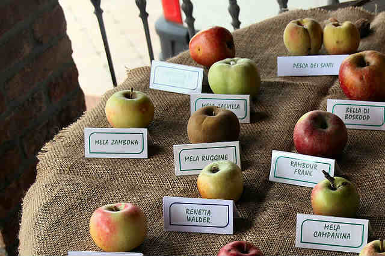
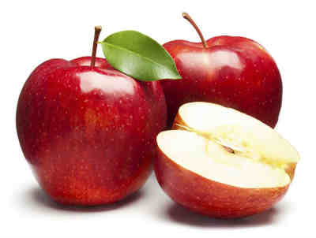
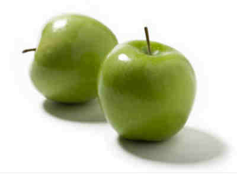

Desde nuestro manzanar cultivamos una amplia variedad de manzanas y las transportamos directamente de el manzano asta tu casa o tu distribuidor mas cercano
.   
| Manzana | Origen | Sabor | Precio | ||||
|---|---|---|---|---|---|---|---|
| Roja | New Yersey | Dulce | 1.60€/Kg | ||||
| Verde | India | Ácidacida | 1.80€/Kg | ||||
| Blanca | Silicon Valley | Agria | 4.50€/Kg |
Historia de las manzanas
Vídeo de uno de nuestros manzanares
Vídeo de otro de nuestros manzanares